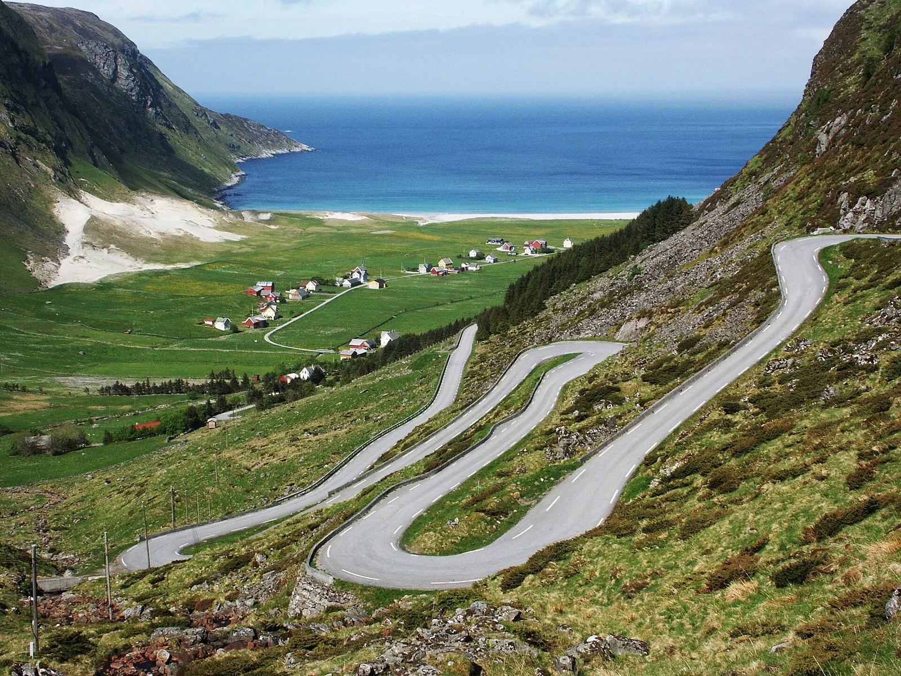

Hoddevik
Stad, Norvège · surf

Plage de sable blanc au fond d’un fjord, entourée de montagnes. Un spot de surf arctique spectaculaire, protégé du vent.
- Lieu
- Stad, Norvège
- Niveau
- Intermédiaire
- Activités
- surf
- Type d'eau
- Mer / océan
- Coordonnées
- 62.12, 5.14 (position approximative du secteur)
Dangers à connaître
- Eau très froide.
- Secours éloignés.
Le conseil d'Ocean Buddy
Prévois une combinaison 5/4 avec gants et cagoule hors été.
Ouvrir dans Ocean Buddy Télécharger sur l'App Store
Source : Fiche Ocean Buddy · septembre 2026 · à vérifier localement.